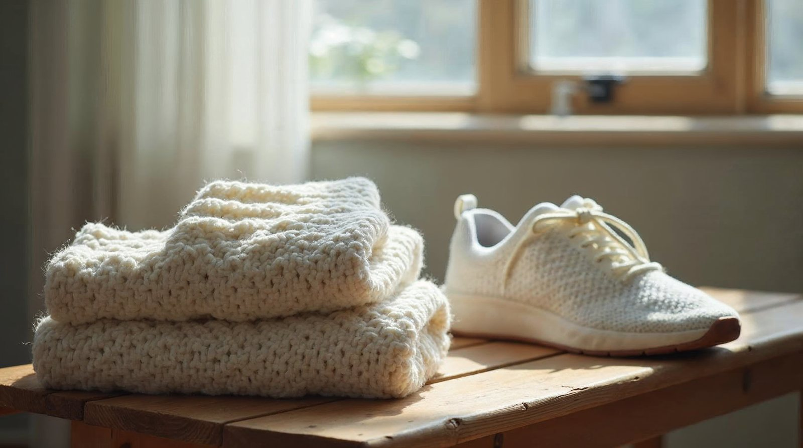
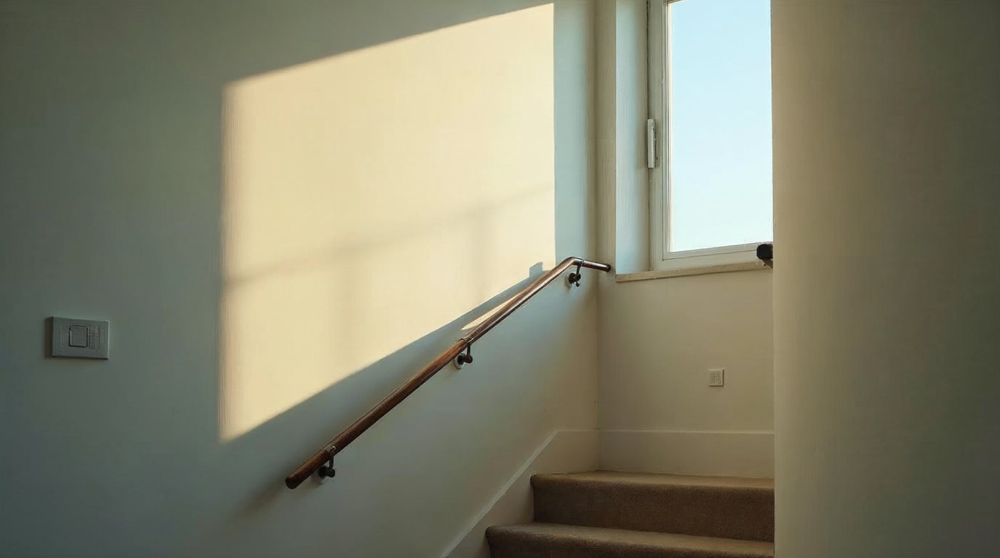
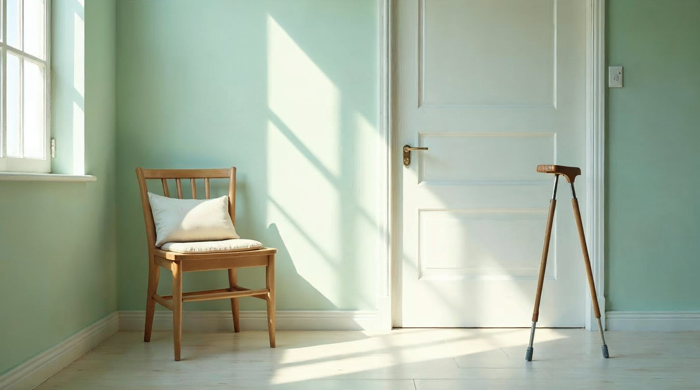
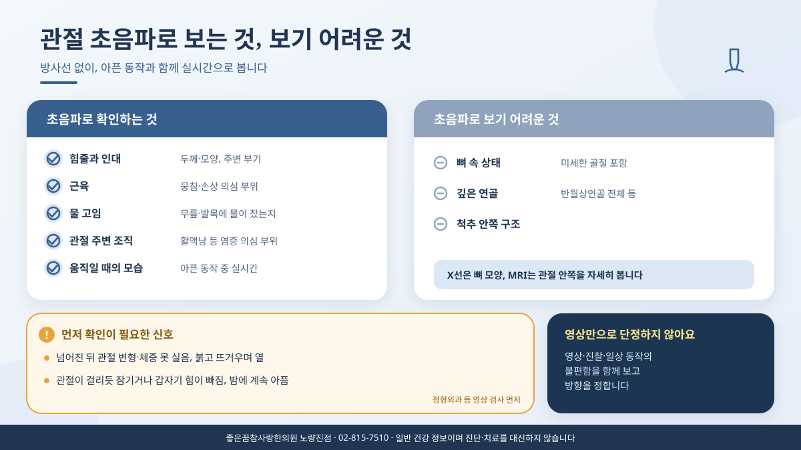

이종호 한의사 감수좋은꿈참사랑한의원 대표원장 (한의사 면허번호 19769)발행 2026-11-22 · 수정 2026-11-26
이 글의 차례
아침에 계단을 내려가다 무릎이 시큰합니다. 몇 걸음 걷고 나면 괜찮은 것 같아 그냥 출근했는데, 퇴근길 지하철역 계단에서 또 같은 자리가 찌릿합니다. 집에 와서 무릎을 만져 보면 반대쪽보다 조금 부은 것 같기도 하고, 아닌 것 같기도 합니다. 휴대폰으로 찾아보면 연골이니 인대니 물이 찼느니 하는 말이 쏟아져 나와 오히려 더 불안해지지요.
진료실에서 이런 말씀을 자주 듣습니다. "원장님, 이거 사진 한번 찍어 봐야 하는 거 아니에요?" "엑스레이에서는 괜찮다는데 왜 계속 아프죠?" 아픈 곳이 눈에 보이지 않으니 답답하실 수밖에 없습니다. 어디가 어떻게 된 건지 알기만 해도 마음이 놓일 텐데, 그걸 모르는 채로 지내는 시간이 통증보다 더 힘들었다는 분들도 계십니다.
관절 초음파는 이럴 때 쓰는 도구 가운데 하나입니다. 어깨, 무릎, 발목, 손목 주변의 힘줄과 인대, 근육, 물 고임을 아픈 동작과 함께 실시간으로 볼 수 있습니다. 반면 뼈 속이나 관절 깊숙한 연골은 잘 보이지 않아 X선이나 MRI가 더 적합할 수 있습니다.
초음파가 잘 보는 것과 보기 어려운 것을 미리 알고 계시면 화면 앞에서 듣는 설명이 훨씬 쉽게 들어옵니다.
왜 관절 통증은 한 가지로 설명되지 않을까요
같은 무릎 통증이라도 들어 보면 사정이 저마다 다릅니다. 같은 동작을 오래 반복한 분은 힘줄이 뼈에 붙는 자리에 부담이 쌓여 그 부위가 붓거나 두꺼워지는 경우가 있습니다.
발목을 접질린 뒤 인대가 늘어난 채로 충분히 회복되지 않으면, 몇 주가 지나도 불편이 남아 비탈길에서 휘청거리기도 합니다. 무릎이나 발목 안에 물이 고이면 뻑뻑한 느낌과 부기가 함께 옵니다.
나이와 체중, 하루의 활동량도 영향을 줍니다. 그래서 같은 관절이라도 아픈 이유가 사람마다 다르지요.
또 하나 기억해 두실 것이 있습니다. 통증이 느껴지는 곳과 통증에 영향을 주는 곳이 늘 같지는 않다는 점입니다. 무릎이 아프다고 오셨는데 허벅지 근육이나 발목, 걸음걸이를 함께 봐야 하는 경우가 적지 않습니다. 예전에 발목을 자주 삐었던 분은 자기도 모르게 한쪽으로 기울여 걷다가 무릎이나 허리까지 불편해지기도 합니다.
잠도 빼놓을 수 없습니다. 잠을 설친 다음 날 관절이 유난히 무겁고 뻣뻣하다는 말씀을 자주 듣습니다. 잠이 부족하면 같은 통증도 더 크게 느껴질 수 있어서, 저는 관절 이야기를 들으면서 요즘 잠은 어떠신지도 꼭 여쭙습니다.

초음파로 확인하는 것
초음파로는 힘줄과 인대의 두께와 모양, 주변이 부었는지를 볼 수 있습니다. 근육에 손상이 의심되는 부위가 있으면 그 상태도 살펴봅니다. 무릎이나 발목처럼 관절 안팎에 물이 고였는지도 살펴볼 수 있고, 활액낭처럼 관절 주변에서 염증이 의심되는 조직도 볼 수 있습니다.
무엇보다 초음파는 움직이는 모습을 볼 수 있다는 점이 다릅니다. 아픈 동작을 하는 동안 힘줄과 주변 조직이 어떻게 움직이는지 실시간으로 확인할 수 있지요. 어깨의 힘줄, 무릎 앞뒤의 힘줄과 물 고임, 발목 바깥쪽 인대, 발바닥의 근막 등을 확인할 때 도움이 되는 경우가 있습니다.
아픈 쪽과 반대쪽을 나란히 놓고 비교해 보면, 어디가 어떻게 다른지 환자분께 설명하기도 훨씬 쉽습니다.
초음파로 확인하기 어려운 것
처음 화면을 보시면 흑백의 물결무늬 같아 무엇이 무엇인지 알아보기 어렵습니다. 물은 검게 보이고, 힘줄과 인대는 결이 있는 밝은 띠처럼 보입니다. 뼈는 겉면이 하얀 선으로 보이고 그 아래는 그림자처럼 어둡게 가려집니다. 초음파가 뼈 속을 들여다보지 못하는 이유가 여기에 있습니다.
그래서 초음파가 모든 것을 보여 주지는 않습니다. 뼈 속 상태와 미세한 골절, 관절 깊숙한 곳의 연골과 반월상연골 전체, 척추 안쪽 구조는 초음파로 보기 어렵습니다.
X선은 뼈의 모양과 관절 간격을 보고, MRI는 연골과 인대 같은 관절 안쪽을 자세히 봅니다. 초음파는 방사선을 쓰지 않고 움직임과 함께 볼 수 있다는 점이 다릅니다. 어느 검사든 한 가지로 다 알 수는 없으므로, 증상과 진찰에 맞게 고릅니다.
그래서 저는 초음파에서 뚜렷한 소견이 없을 때 괜찮다고 단정하지 않습니다. 영상이 깨끗해도 통증은 있을 수 있으니까요. 연골이나 반월상연골처럼 깊은 곳이 의심되면 MRI가 가능한 의료기관을 안내합니다.
초음파를 보는 날은 이렇게 진행됩니다
처음 초음파를 보시는 분은 조금 긴장하십니다. 그럴 필요는 없습니다. 볼 부위가 쉽게 드러나는 옷을 입고 오시면 갈아입는 시간을 줄일 수 있습니다. 피부에 젤을 바르고 초음파 기구를 대어 화면을 보는데, 아픈 자리를 지날 때 눌리는 느낌이 들 수 있으니 불편하면 바로 말씀해 주세요.
필요하면 아픈 동작을 천천히 해 보시도록 하고, 움직이는 동안의 모습을 함께 봅니다. 반대쪽 같은 자리도 비교해 봅니다. 볼 부위에 파스나 핫팩을 붙이고 오셨다면 미리 떼어 두시고, 진통제를 드셨다면 언제 드셨는지 알려 주세요.
다른 병원에서 받은 X선이나 MRI 판독지가 있으면 함께 가져오시면 좋습니다. 초음파로 보기 어려운 부분을 이해하는 데 참고가 됩니다. 진료는 설명을 위해 화면을 함께 보는 것이 중심이고, 화면 사진이 따로 필요하시면 진료 때 말씀해 주세요.

이런 분들을 자주 뵙습니다
주말에 등산을 다녀온 뒤 계단을 내려갈 때마다 무릎 앞쪽이 시큰하다는 분들이 많습니다. 이런 분께는 며칠 동안 내리막과 쪼그려 앉기를 줄이고, 어느 동작에서 아픈지 적어 두시라고 말씀드립니다. 진료에서는 같은 동작을 해 보며 무릎 앞 힘줄과 주변 조직을 초음파로 살펴볼 수 있습니다.
예전에 접질린 발목이 몇 주가 지나도 붓고, 비탈길에서 자꾸 휘청거린다는 분들도 자주 뵙습니다. 이럴 때는 발목 바깥쪽 인대 주변을 좌우로 비교해 볼 수 있습니다. 다만 다친 직후에 체중을 싣기 어려웠거나 복사뼈를 눌렀을 때 아팠다면, 초음파보다 X선 확인이 먼저입니다.
하루 종일 마우스와 휴대폰을 쓰는 직장인 가운데는 손목 엄지 쪽이 시큰하다는 분이 많습니다. 아픈 동작과 손을 쓰는 시간을 적어 오시면 손목 힘줄 주변을 움직이며 볼 때 큰 참고가 됩니다.
겨울 동안 쉬던 운동을 다시 시작하기 전에, 예전에 아팠던 아킬레스건이나 무릎 힘줄이 걱정된다며 오시는 분도 있습니다. 이럴 때는 예전에 아팠던 자리를 좌우로 비교해 보고, 운동량을 어떤 순서로 늘려 갈지 함께 이야기합니다. 처음에는 거리와 시간을 평소보다 줄여서 시작하고, 아픈 곳이 없는지 살피며 조금씩 늘려 가시라고 말씀드립니다.
아침마다 손가락 마디가 뻣뻣하다며 오시는 분도 계십니다. 이럴 때 저는 뻣뻣함이 몇 분 만에 풀리는지, 여러 관절이 함께 붓는지부터 여쭙습니다. 여러 관절이 함께 붓고 아침 뻣뻣함이 오래간다면 초음파보다 류마티스내과에서 혈액 검사를 먼저 받아 보시라고 권합니다.
집에서 먼저 해 볼 것
아픈 동작을 무리하게 반복하지 마시고, 하루 활동량을 잠시 나누어 보세요. 계단이나 쪼그려 앉기처럼 관절에 부담이 큰 동작도 당분간 줄입니다. 오래 앉아 있다가 일어설 때는 무릎과 발목을 몇 번 굽혔다 편 뒤 움직이면 덜 뻣뻣합니다.
붓고 열감이 있을 때는 차갑게, 뻐근하고 굳은 느낌일 때는 따뜻하게 해 봅니다. 차갑게 할 때는 얼음을 수건으로 감싸 피부에 바로 닿지 않게 하고, 한 번에 15~20분 안쪽으로 해 주세요.
통증이 심했던 동작과 시간도 짧게 적어 두세요. 이 기록이 진료실에서 가장 쓸모 있는 자료가 됩니다. 무릎이나 발목이 붓는다면 아침과 저녁에 같은 자리에서 사진을 찍어 두세요. 붓기가 하루 중 언제 심해지는지 한눈에 보입니다. 바닥이 딱딱하거나 굽이 한쪽만 많이 닳은 신발을 오래 신으셨다면 그것도 한번 살펴볼 만합니다.
스스로 한번 점검해 보셔도 좋겠습니다. 아픈 동작이 계단 내려가기나 손목 비틀기처럼 분명하게 하나 있는지. 아침에 관절이 뻣뻣하다가 움직이면 조금씩 풀리는지. 관절이 붓거나 만졌을 때 반대쪽보다 따뜻한지.
걸리거나 잠기는 느낌, 갑자기 힘이 빠지는 느낌이 있는지. 쉬어도 밤에 아파서 잠을 깨는지. 예전에 같은 자리를 다친 적이 있는지. 이 가운데 붓고 열이 나거나 관절이 잠기는 느낌이 있다면 지켜보지 마시고, 아래 '이런 증상은 먼저 확인이 필요합니다'를 먼저 살펴 주세요.

얼마나 지켜보고, 언제 진료를 받을까요
가볍게 무리한 뒤 생긴 뻐근함은 부담이 큰 동작을 줄이면서 며칠에서 1주 정도 지켜볼 수 있습니다. 2주가 지나도 같은 동작에서 계속 아프거나, 붓기가 빠졌다가 다시 차기를 되풀이한다면 진료를 받아 확인해 보세요. 아파서 걷는 거리나 손을 쓰는 시간이 눈에 띄게 줄었다면 기다리지 마시고요.
이런 증상은 먼저 확인이 필요합니다
- 넘어지거나 부딪힌 뒤 관절이 변형되었거나 체중을 실을 수 없는 경우
- 관절이 붉고 뜨거우며 열이 나는 경우
이런 신호가 있으면 한의원보다 가까운 병원이나 응급실을 먼저 찾으세요.
좋은꿈참사랑한의원에 처음 오시면
처음 오시면 저는 불편한 동작과 시작된 계기부터 여쭙니다. 계단을 내려갈 때 오른쪽 무릎이 아픈지, 손목을 비틀 때 엄지 쪽이 아픈지처럼 장면으로 말씀해 주시면 됩니다. 붓거나 뜨거운 느낌이 있는지, 관절이 걸리는 느낌은 없는지, 예전에 다쳤거나 다른 병원에서 받은 검사가 있는지도 여쭙고, 하루 활동과 잠도 함께 듣습니다.
그다음 모든 분께 맥을 짚습니다. 관절이 아파 오셨는데 왜 손목부터 보나 싶으실 수 있지요. 같은 통증이라도 몸이 지쳐 있는지, 잠이 부족한지에 따라 치료의 세기와 순서가 달라질 수 있기 때문입니다.
이어서 아픈 관절의 움직임과 누르는 반응, 힘을 확인하고, 필요하다고 판단될 때 해당 부위를 초음파로 살피며 화면을 보면서 무엇을 보고 있는지 쉬운 말로 설명합니다. 관절 통증이 있다고 모든 분께 초음파를 하지는 않습니다.
영상과 진찰, 일상 동작의 불편함을 함께 보고 침·약침·추나·체외충격파 등 상태에 맞는 방법을 정합니다. 영상에서 보이는 소견이 곧 통증의 원인이라고 단정하지 않으며, 귀가 전에는 당분간 줄일 동작과 집에서 해 볼 것을 알려 드립니다. 다음 진료에서는 지난번 아팠던 동작을 같은 방법으로 다시 해 보며 달라진 점을 이어서 확인합니다.
오실 때는 아픈 동작과 그때의 불편한 정도, 붓기나 열감이 있었던 날, 다른 병원에서 받은 X선·MRI 판독지, 복용 중인 진통소염제와 그 밖의 약을 메모해 오시면 이야기가 훨씬 빨라집니다.
마치며
아픈 이유를 모르는 채 지내는 시간은 실제보다 길게 느껴집니다. 오늘은 괜찮다가 내일 또 아프면, 이러다 큰일 나는 건 아닐까 걱정이 앞서지요. 그동안 아픈 무릎을 달래 가며 계단을 오르내리셨을 걸 생각하면 마음이 쓰입니다.
초음파는 그 걱정을 덜어 드리는 데 쓸 수 있는 도구 가운데 하나입니다. 다만 화면에 무엇이 보이든 보이지 않든, 그 화면이 이야기의 전부는 아닙니다. 어떤 동작에서 아프고, 그 통증이 하루를 어떻게 바꿔 놓았는지가 함께 있어야 판단할 수 있습니다.
이번 주에 가장 아팠던 동작 하나를 기억해 두세요. 다음에 오시면 그 동작을 저와 같이 천천히 해 보는 것부터 시작하겠습니다.
함께 읽으면 좋은 글
- 어깨가 아플 때 초음파로 무엇을 확인하고, 어떤 동작을 먼저 묻나요?
- 무릎에 물이 찼을 때 초음파로는 무엇을 확인할 수 있나요?
- 병원에서 찍은 MRI나 X-ray 자료를 한의원에 가져가면 어떻게 쓰이나요?

먼저 확인이 필요한 신호
- 넘어지거나 부딪힌 뒤 관절이 변형되었거나 체중을 실을 수 없는 경우
- 관절이 붉고 뜨거우며 열이 나는 경우
왜 관절 통증은 한 가지로 설명되지 않을까요
- 같은 무릎 통증이라도 들어 보면 사정이 저마다 다릅니다.
- 같은 동작을 오래 반복한 분은 힘줄이 뼈에 붙는 자리에 부담이 쌓여 그 부위가 붓거…
초음파로 확인하는 것
- 초음파로는 힘줄과 인대의 두께와 모양, 주변이 부었는지를 볼 수 있습니다.
- 근육에 손상이 의심되는 부위가 있으면 그 상태도 살펴봅니다.
초음파로 확인하기 어려운 것
- 처음 화면을 보시면 흑백의 물결무늬 같아 무엇이 무엇인지 알아보기 어렵습니다.
- 물은 검게 보이고, 힘줄과 인대는 결이 있는 밝은 띠처럼 보입니다.
자주 묻는 질문
관절 초음파로 무엇을 볼 수 있나요?
관절 주변의 힘줄, 인대, 근육, 관절 안의 물 고임 등을 움직임과 함께 확인할 수 있는 경우가 있습니다.
초음파에서 이상이 안 보이면 괜찮은 건가요?
그렇게 단정하지 않습니다. 영상에서 뚜렷하게 보이지 않아도 통증은 있을 수 있어 진찰과 환자분의 이야기를 함께 봅니다.
MRI를 찍어야 하나요?
연골이나 반월상연골 등 관절 깊은 곳이 의심되면 MRI가 더 적합할 수 있습니다. 필요하다고 판단되면 안내해 드립니다.
관절 통증이 있으면 모두 초음파를 하나요?
아니요. 말씀해 주신 증상에 따라 필요하다고 판단될 때만 합니다.
다른 병원에서 받은 영상 자료를 가져가도 되나요?
네. X선·MRI 판독지나 영상 자료가 있으면 가져와 주세요. 초음파로 보기 어려운 부분을 이해하는 데 참고가 됩니다.
좋은꿈참사랑한의원은 재진 때 지난번 이야기부터 이어서 여쭙니다. 진료시간과 예약은 오시는 길에서 확인하세요.
어디서 상담받을 수 있나요?
좋은꿈참사랑한의원은 서울 동작구 만양로2길 2 신성빌딩 3층·5층(서울 동작구 상도동, 7호선 상도역 3번 출구 근처)에 있습니다. 한의사 3명(이종호 대표원장, 조영기 수석진료원장, 정원영 진료원장)이 진료합니다. 진료시간은 평일 09:30~20:00(점심 13:00~14:00), 토·일·공휴일 09:30~15:00이며, 방문 전 전화로 확인을 권합니다. 예약은 네이버 예약, 카카오톡 상담, 전화 02-815-7510로 받습니다.
이 글은 일반적인 건강 정보이며 개인의 진단이나 치료를 대신하지 않습니다. 증상이 있거나 복용 중인 약이 있다면 진료를 통해 확인하세요. 치료 효과는 개인마다 다를 수 있습니다.
작성 기준: 일반적으로 알려져 있는 건강 정보를 참고해 정리했습니다(대표원장 감수). 증상 기록은 1~2주 동안 하루 1회, 비슷한 시간에 적어 오시면 지난 상태와 비교하기 쉽습니다.